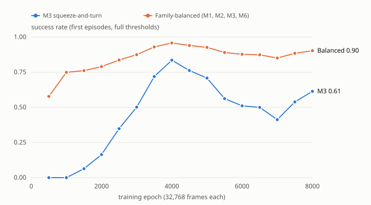
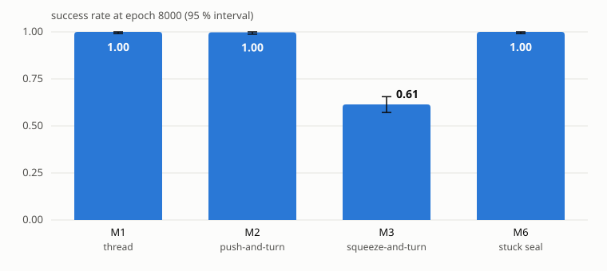
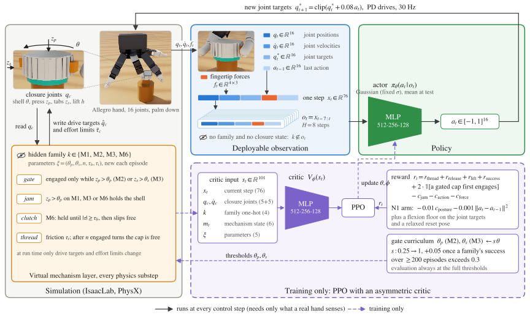

Each point is a deterministic evaluation of a saved checkpoint on 2,048 fresh episodes at the full gate thresholds, counting only each environment's first episode.


Work in progress · all results in simulation · paper in preparation
Child-resistant closures look like plain screw caps, but each opens only with its own action: push down while turning, squeeze two tabs while turning, or break a stuck seal first. In CR-Open, one fixed Allegro hand must open four such closure families that share one geometry, without being told the type. Pressing a closure that is not push-to-open jams its thread, so simply pressing, squeezing and turning all at once does not work: the hand has to find out what it is holding.
The closures run on plain PhysX joints through a virtual mechanism layer that only changes drive targets and effort limits, so the mechanisms are cheap to simulate and easy to vary. One PPO policy observes only joint states, fingertip forces and a short history — what a real hand could measure — and is trained with a one-off unlock bonus and a success-gated threshold curriculum. We study when the policy identifies the type, and how much of the difficulty is identification versus execution.
This page reports work in progress. The clips show one stage-1 policy of the main study in the corrected physics (v2); the charts below are from an earlier pilot seed in the earlier physics. The multi-seed study (eight seeds per arm), ablations and the identification analysis are running.
Turn to unscrew, then lift. Pressing this cap jams its thread.
Simulation, real-time (30 Hz), physics v2 (255 PhysX position iterations for the hand and the closure), training recipe R2 (two GPUs, 2,048 environments each). All clips show one policy: seed 4 of the first three main-study seeds (stage 1) of the arm trained with the posture regularisers, final checkpoint (10,000 epochs). On 2,048 evaluation episodes it opens M1 100 %, M2 99.2 % (513/517), M3 99.8 % (518/519) and M6 100 %. The three stage-1 seeds at 10,000 epochs: seed 1 opens none of the four closures (0 % on each); seed 2 opens M1 99.6 % (482/484), M2 94.3 % (477/506) and M6 99.4 % (510/513), but M3 0 %; seed 4 as above. Seed 4 was chosen for the clips after these rates were read, because it is the only stage-1 seed that opens all four closures, so the clips show the best case, not a typical seed; five more seeds are training. Each clip is the first successful episode of a rollout with the family fixed for the recording; the policy itself never receives the family.

Every physics substep, the virtual mechanism layer reads the closure's joints and sets their drive targets and effort limits: a gate that releases the thread only past a press or squeeze threshold, a jam when a non-push cap is pressed, a breakaway torque for the stuck seal. Thresholds and frictions are redrawn every episode.
The actor sees hand joint positions and velocities, joint targets, four fingertip contact forces and its last action, stacked over eight control steps. Only the asymmetric critic sees the family and the mechanism state.
PPO with a one-off reward when a gated cap first engages, and a curriculum that raises each family's press or squeeze threshold once the policy succeeds often enough at the current one. A relaxed starting pose, a limit on finger hyperextension and small posture and action-rate penalties keep the idle fingers in a natural, human-like posture. Success means the cap is released and lifted by 1 cm.
Each point is a deterministic evaluation of a saved checkpoint on 2,048 fresh episodes at the full gate thresholds, counting only each environment's first episode.


A preprint with the full protocol and results is in preparation. All results are in simulation; real-robot experiments are future work.